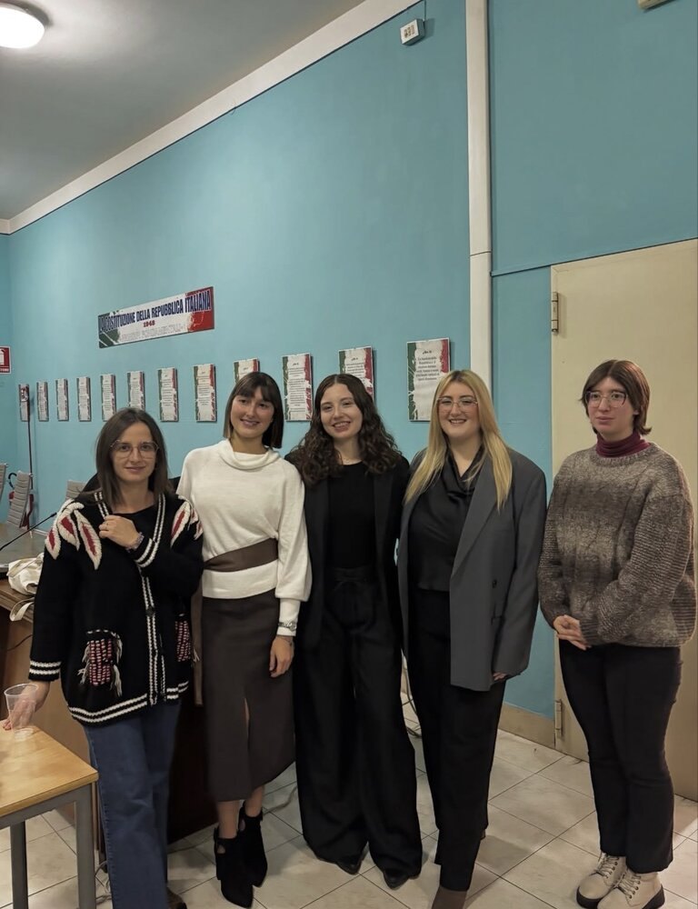
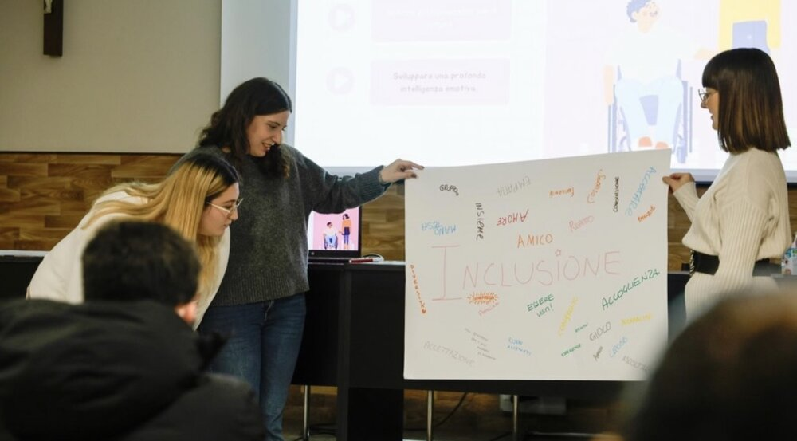
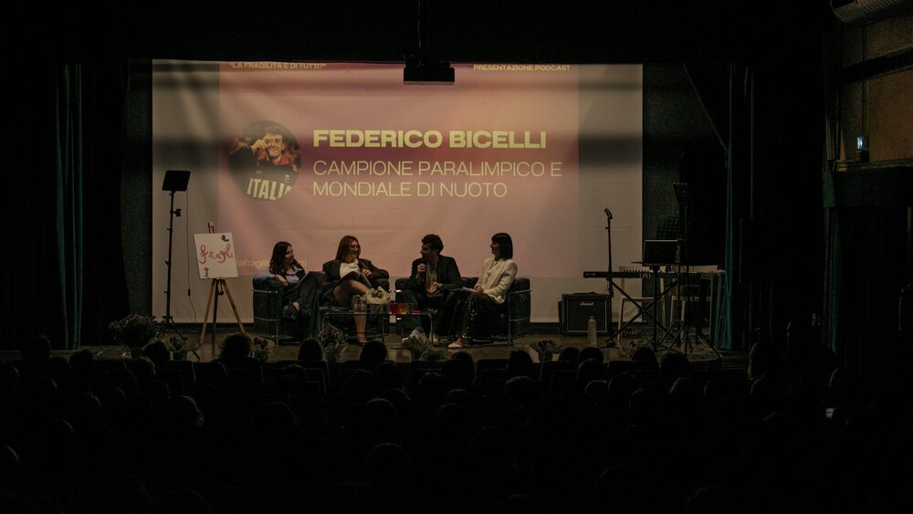
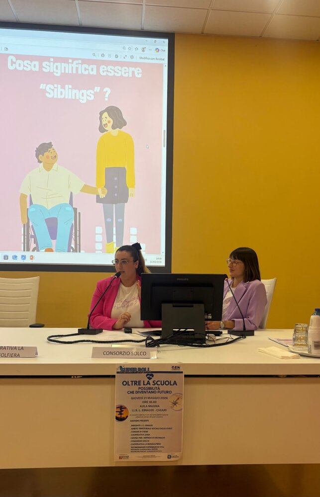
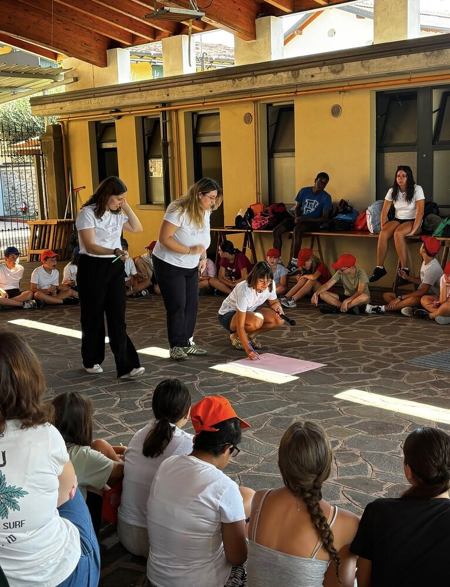
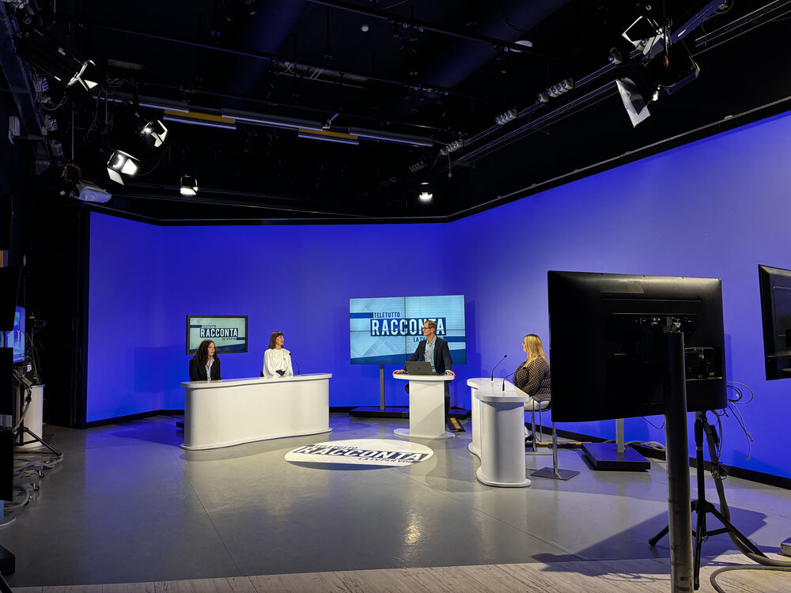
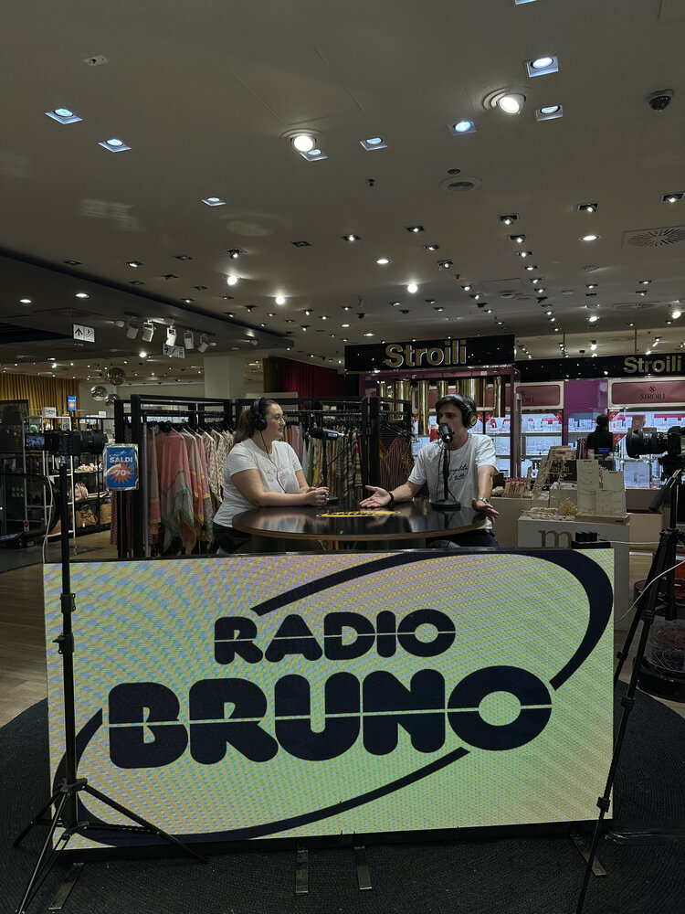

Interventi al pubblico
Dal palco alla radio
Gli eventi dal vivo e le interviste che ci hanno permesso di raccontare il progetto a un pubblico sempre più ampio.
Eventi

Presentazione del progetto presso il Comune di Nuvolera
Un'occasione per far conoscere il progetto al di là dei confini rovatesi. Una prima presentazione al pubblico per approfondire una realtà spesso sconosciuta.

Presentazione del progetto presso l'Oratorio del Duomo di Rovato
Abbiamo avuto il piacere di presentare il progetto anche nella piccola comunità del Duomo di Rovato, paese in cui è nata e cresciuta Elisa.

Evento Podcast Live con Federico Bicelli
Mercoledì 15 aprile 2026 abbiamo realizzato un sogno nel cassetto. Presentare il progetto podcast al pubblico. Quella sera, 290 cuori hanno ascoltato il nostro racconto e le parole di Federico Bicelli. Siamo soddisfatte del lavoro svolto, della partecipazione e dei riscontri positivi ricevuti durante e dopo l'evento.
Ascolta la puntata →
Presentazione del progetto presso l'IIS Einaudi di Chiari — "Oltre la scuola"
Un'occasione per confrontarci con alcune realtà del territorio che si occupano dei percorsi post diploma per ragazzi con disabilità.

Presentazione del progetto presso il Grest di Sant'Andrea
Abbiamo trascorso una meravigliosa mattinata di dialogo e confronto con i bambini del Grest che ci hanno permesso di scoprire la loro visione della fragilità.
Guarda il reel →Interviste

Intervista a Teletutto
Lunedì 2 febbraio 2026 siamo state intervistate nella trasmissione Teletutto Racconta, in onda alle ore 18:10. È stata la nostra prima intervista televisiva, un'importante occasione per presentare il podcast, raccontarne la nascita e condividere gli obiettivi del progetto.
Guarda su YouTube →
Intervista a Radio Bruno Lombardia
Venerdì 24 luglio 2026 Sindi, in rappresentanza del podcast, è stata intervistata nel programma Ciao Estate! di Radio Bruno Lombardia. La nostra seconda intervista, un'altra preziosa occasione per far conoscere il progetto a un pubblico sempre più ampio, raccontando come è nato e perché abbiamo scelto di parlare di fragilità attraverso il podcast.
Guarda su YouTube →Il link sarà disponibile appena l'intervista verrà pubblicata.